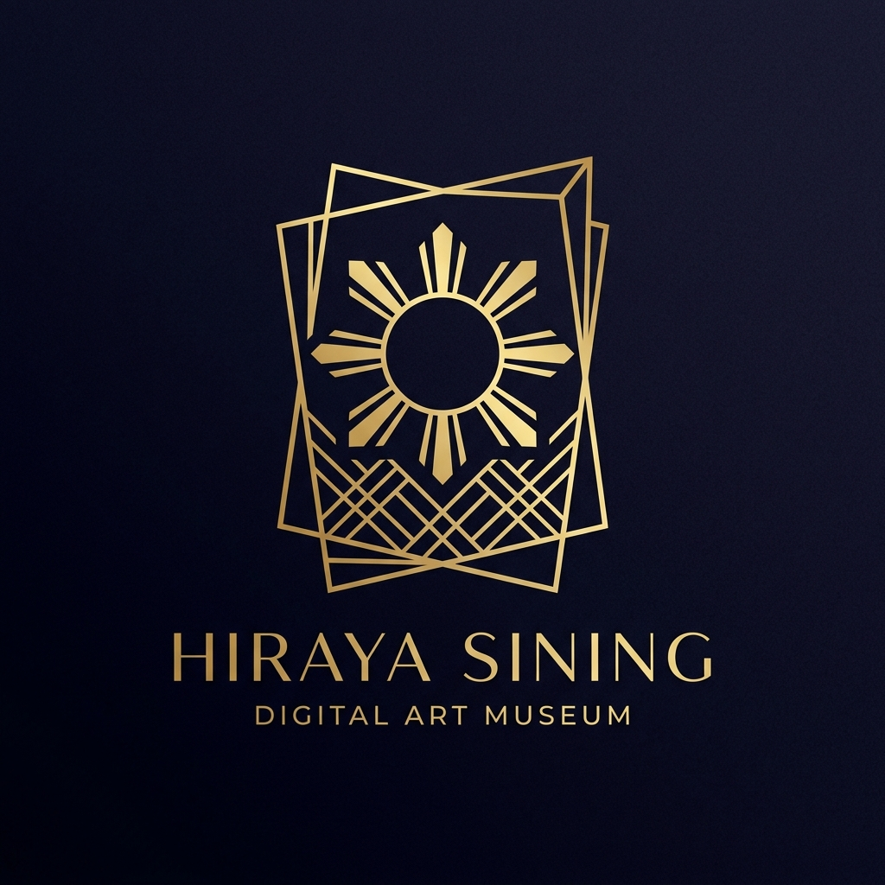

Hiraya Sining is a digital museum dedicated to showcasing the rich cultural heritage and timeless masterpieces of Philippine Art History. We believe that art is a window into the soul of a nation.
Our mission is to illuminate the 'ningning ng kultura' the brilliance of our culture providing a virtual space where heritage comes alive and is accessible to everyone around the world.
Explore our curated collections and learn more about the artists who shaped the visual identity of the Philippines.
* Special acknowledgment to the National Museum of Fine Arts. All of the magnificent artworks featured in this digital exhibit are proudly housed within their physical collections.
